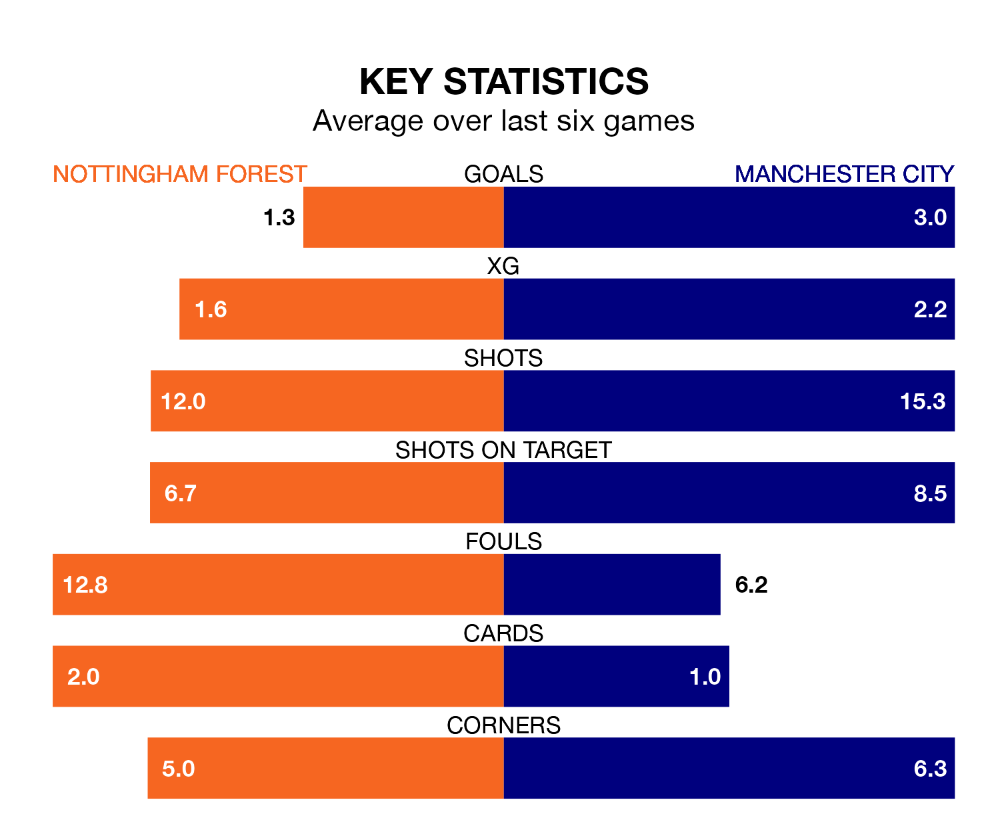

Relegation candidates Nottingham Forest face a challenge against high-flying Manchester City at the City Ground on Sunday.
Nottingham Forest are 17th in the Premier League table, and have picked up seven wins and nine draws in their 34 games to date.
The Citizens, meanwhile, are second in the standings with 76 points, having won 23 and drawn seven of their first 33 matches, and are one point behind table-toppers Arsenal.
With 80 goals in 33 games so far this season, City are the league's second-highest scorers with 2.4 goals per game. And they are conceding fewer than average, letting in 32 goals at a rate of 1.0 per game.
Forest, meanwhile, are below average scorers, with 1.2 goals per game, compared to a league average of 1.6. They have conceded 1.8 goals per game.
In Erling Haaland and Cole Palmer, the Citizens have the league's most on-form strikers so far this season. They have notched 20 goals each.
The Tricky Trees's top scorer, with 12 goals in 27 games, is Chris Wood.
The hosts are in disappointing form in the Premier League, with one win and three draws from their last six games.
With four wins and two draws over that period, the away side's form is much better – they have taken 14 points from 18, compared to Forest's six.
In the last three years, Forest and City have played each other on three occasions. City won two of them and they drew once.
Their last meeting was on September 23, when City won 2-0 at home.
Forest's last match was on April 21, a 2-0 loss against Everton.
City beat Brighton and Hove Albion 4-0 last time out, on Thursday, with Phil Foden (two), Julián Álvarez and Kevin De Bruyne on the scoresheet.
Updated: 07:59 (UTC), 26/04/24